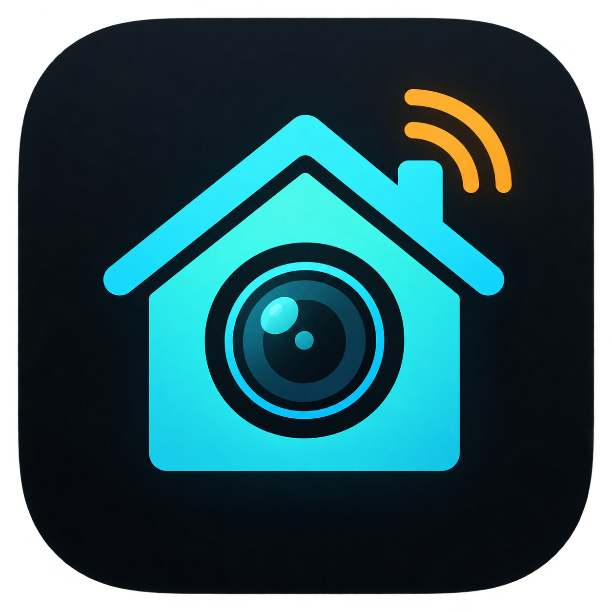

◉
Native RTSP playback
LibVLC over TCP handles Intelbras camera streams directly, without routing video through a browser.

HARM DownloadLocal-first Android display
Turn an older Android tablet into a focused media screen that Home Assistant can wake, control, and switch off — entirely across your local network.
Purpose-built
HARM does one job well: receive commands and show media without turning your wall tablet into another dashboard to maintain.
LibVLC over TCP handles Intelbras camera streams directly, without routing video through a browser.
A playback watchdog detects stalled streams and reconnects to the same camera automatically.
Wake the display, adjust brightness, stop playback, or switch the screen off from an automation.
Simple REST commands make HARM usable from automations, scripts, scenes, and sensor events.
Connect to a compatible NVR, discover available channels, select cameras, and preview them locally.
When nothing needs attention, HARM presents a neutral black screen or powers the display off.
Event-driven
A camera or any Home Assistant entity detects an event.
The automation selects a channel and display duration.
HARM connects directly to the local stream in full screen.
Playback stops and the screen can switch off automatically.
Straightforward automation
Call one REST command with a channel and timeout. HARM handles waking, playback, and stream recovery on the tablet.
Read the integration guide ↗# Show camera 1 for 30 seconds
action: rest_command.harm_camera
data:
channel: 1
timeout: 30
# Then turn the screen off
action: rest_command.harm_screen_offPrivate by default
Camera credentials stay on the tablet, Android backup is disabled, and the control API uses a device-generated token. Keep port 8765 inside your LAN and never expose it through your router.
Read the security policy ↗Give old hardware a focused job
Download HARM, connect your NVR, and let Home Assistant decide when the screen should come alive.